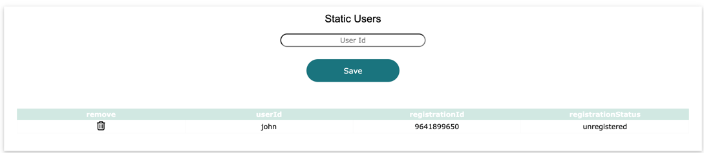

Once a network admin has added a new user, the user must complete registration.

The registration for john is 9641899650
From the login page, enter john, leave the password blank and click login.
If the username has been registered then John will be redirected to the registration page.
Enter the registration ID of 9641899650, add a password then click register.

John will be redirected back to the login page